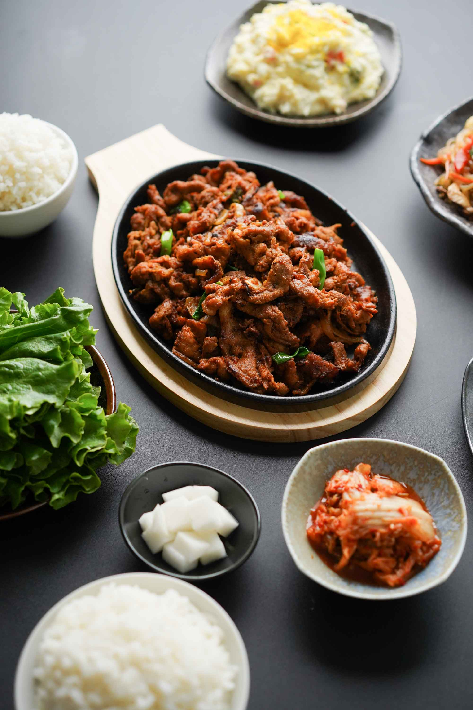

Home
Pork Bulgogi
How To Make Pork Bulgogi

This Will Teach You How To Make Pork Bulgogi
Spicy, tender, and rich pieces of sweetened pan-fried pork and loaded with green and white onions–this
spicy pork bulgogi will give you the feeling that you’re eating at a Korean BBQ restaurant in the middle of the week when you’re at home.
What is bulgogi? Background
Bulgogi is a traditional Korean dish made of grilled, marinated meat (typically beef, pork, or chicken) and translates to “fire meat” because it’s made over a grill or barbecue.
It was made around the Goguryeo era (37 BCE–668 CE) and originated from grilled, skewered beef.
It’s a classic Korean dish that is made at home and in many Korean restaurants–most specifically Korean BBQ restaurants like MoRanGak, BCD Tofu House,
or Baekjeong. This version of spicy pork bulgogi is called dwaeji-bulgogi and it’s super simple to marinate and cook on your stovetop.
Ingredients in spicy pork bulgogi marinade
- While traditional beef bulgogi has a soy sauce-based marinade, dwaeji-bulgogi or spicy pork bulgogi uses a Korean-based chile pepper flakes/powder called gochugaru and chile pepper paste called gochujang. Gochujang is the same paste used for Korean fried chicken sauce and tteokbokki too. You can find gochugaru and gochujang at your local Korean market like H-Mart or online.
- For this recipe, it’s at a mild spice level, so if you want more of a kick feel free to add more of either ingredient, and don’t forget to taste the marinade as you go. Both of these ingredients can get increasingly spicy the more you add so please be careful. As for the rest of the ingredients, I added Korean pear and rice syrup for sweetness, ginger, onion, and garlic for savoriness, and other seasonings like soy sauce, sesame oil, and mirin for more flavor.
- The cuts of meat I like to use for this recipe are pork shoulder/butt or pork belly. I would not recommend using tenderloin or a cut that is too lean because you want a nice balance of fattiness with the spicy flavor. At my favorite Korean restaurants, spicy pork bulgogi is always cut in very thin slices, and I prefer this type of texture when eating this dish because it’s easier to eat in rice paper. You can slice your pork to your preferred thickness,
How to make Korean pork bulgogi
- To make spicy pork bulgogi, keep your sliced pork, green onions, and yellow onions in a large mixing bowl while you prepare the marinade. For the marinade, I like to combine all my wet ingredients in a bowl first and then whisk it together. Since the rice syrup and gochujang are slightly on the thicker end,
I want to make sure all the liquid is fully combined before adding it into the food processor. Then add your Korean pears, garlic, ginger,
black pepper, and liquid ingredients into a food processor (or a blender) and pulse until it turns into a paste. Taste the marinade to make sure you like the flavor and spice level and adjust if necessary.
- Add this sauce into the mixing bowl with the meat and use your hands (or tongs) to combine all the ingredients together. You want to make sure you get all the nooks and crannies because this will be a quick marinade and you want every piece of meat to get slathered with spicy sauce.
Make sure to marinate this dish for at least 1 hour in the fridge or overnight.
To cook the spicy pork bulgogi, you can cook it on the grill or on the stove. I love to pan fry this on my cast iron grill on the stove because it’s super easy and quick–this is most similar to the way I eat it at a Korean BBQ restaurant.
Serving and storage
There are so many different ways of enjoying spicy pork bulgogi–I mean it’s a delicious grilled meat that’s been marinated with full of spicy, sweet flavors. It goes well with so many things. Traditionally, it’s served with various banchan (or side dishes) like Korean potato salad, japchae, rice paper or Korean purple rice, lettuce, kimchi, and so many more things. You can also just eat it with plain white rice. More recently, I’ve seen this at many fusion restaurants that serve it in tacos or burritos.To save extra spicy pork bulgogi, just transfer it into an airtight container and place it in the fridge. It should last for 3 days in the fridge and you can reheat it in the microwave.